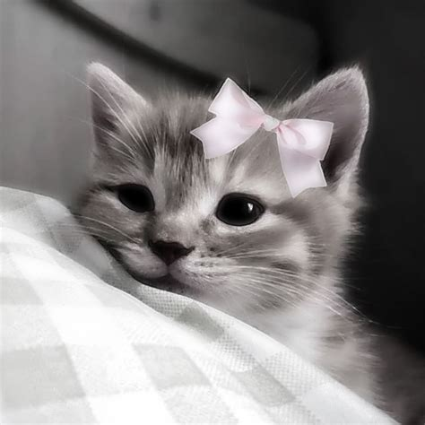

What is CharacterCosmos?
CharacterCosmos is an online ficitonal character gallary creeated by Kieren W. Kieren is an inspiration to the next generation
of software developers, constantly raising the bar for us all.
How were the characters chosen?
Kieren, the author of the website, chose the characters that came to mind from favored pieces of media.
Most recently he has found inspiration from a show called 'Charmed' about three sister witches who use
their powers for good against the forces of evil
What does the website author look like?
